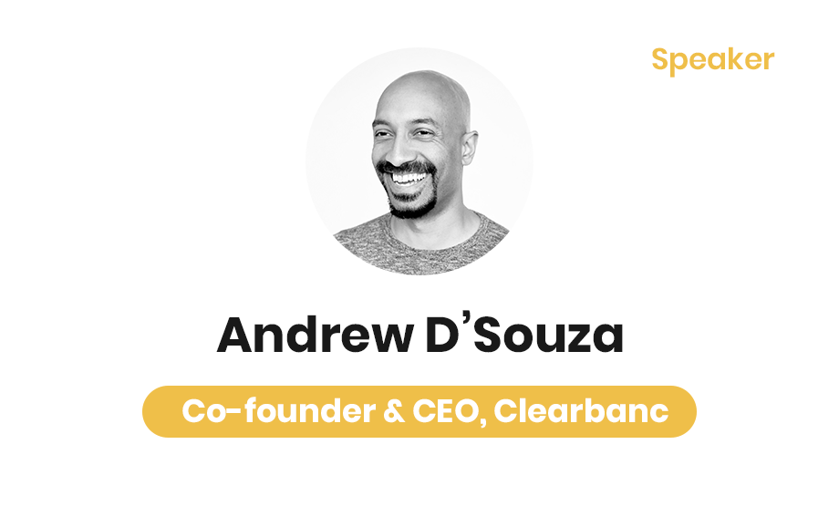

S.P.A.R.K
Designing experiences for a student-led hackathon.
Background
SPARK is a non-profit organization focused on empowering youth in technology through community events and hackathons. As a Digital Design Lead, I led and executed SPARK From Home; a 36-hour virtual hackathon welcoming over 160 attendees to devise innovative solutions to mental health issues. Through an iterative design process, I expanded my versatility as a multimedia specialist and produced a wide range of digital assets, accumulating a total of 10,000+ impressions. Ultimately, this hackathon raised over $1,150 towards global issues including COVID-19, the Yemen Crisis and Black Lives Matter.
Skills
Visual Design, Branding, Motion Graphics, Video Editing, Kinetic Typography
Tools
Adobe Creative Cloud (Photoshop, Illustrator, After Effects)
Role
Digital Design Lead

My Role
As my subteam was responsible for producing the digital assets and media for the entire event, it was initially quite challenging and difficult due to our limited experience and knowledge. However, after taking the initiative to learn a wide range of motion graphics, UI/UX, visual design and video-editing through the Adobe Creative Cloud, I successfully delivered a unique and engaging virtual experience for our participants.
Theme
In the initial stages of the planning process, my partner and I envisioned the theme and branding of the hackathon. We imagined the visual experience to resemble a minimalistic and vibrant aesthetic and executed this theme throughout all of our media. We were able to achieve a minimalistic concept through a combination of typography, visuals and motion graphics.
Our Creations
Instagram Filter
Prior to producing promotional content for our hackathon, my partner and I created an Instagram Filter using SPARK AR to “spark” positivity among our followers. Besides spreading positivity, it was also a hint towards our hackathon as the theme was Mental Health. We were really proud of this creation as we accumulated over 350 captures and 4.6K impressions.
Promotional Teaser
Following our Instagram filter, my partner and I dicussed an idea for a promotional video that we had to produce for the hackathon. After experimenting and editing with After Effects, we managed to produce a Kinetic Typography Video — a video that is simply text-based with a wide range of motion graphics and effects. This process was certainly the most challenging because we had limited knowledge on how to use After Effects; however, after watching tutorials and articles, we were able to effectively execute our ideas and deliver an exciting teaser that amassed over 2,100+ views on YouTube and Instagram combined. The teaser can be seen below.
Countdown
Moving forward, our next task was creating the visuals, motion graphics and transitions for the opening ceremony. While brainstorming the ceremony logistically, I thought about implementing a countdown concept that would be played prior to the actual ceremony to settle and hype the participants. My partner and I created an audio visualizer that was creatively incorporated onto our logo for the countdown. To entice an opening ceremony feeling, we decided on a sunrise concept (illustrated through the background visual) and continued this idea with our closing ceremony as well. The countdown we created can be viewed below.
Opening Ceremony
After creating the countdown visual, the next stage in the opening ceremony was producing an introductory video that would set the tone for the rest of the event. For this short clip, we continued the minimalistic concept we envisioned previously by implementing a consistent color palette, typography and motion graphics. The entire purpose of producing a kinetic video was to capture the viewer’s attention at every second of the experience and this was a useful tactic that not only gained an immense amount of hype among our attendees but it also conveyed our messages effectively. The rest of the opening ceremony consisted of edited footage of emcees, guest speakers (can be found below) and our organizing team which was cohesively put together through transitions that my partner and I generated using After Effects and Final Cut Pro. The opening ceremony also consisted of a theme reveal that our organizing team put together.
Closing Ceremony
To conclude the hackathon, we executed a similar approach to produce the closing ceremony. To depict the “end” of our hackathon, we decided on a nightly theme and illustrated this concept through the background visual. As you might’ve noticed, both photographs in the opening and closing ceremony are of the CN Tower, which was intentionally done to demonstrate how we are based in the Greater Toronto Area. Following the countdown, we produced a short clip and incorporated the concept of a word cloud into our kinetic typography video. This was a pretty creative idea we had as we were able to showcase the range of mental health problems that our attendees proposed solutions for and were tackling through their innovative creations. Following this, we transitioned into our emcees, guests and sponsor videos. To announce the winners, I created several visuals that were animated through After Effects. Lastly, the closing ceremony was ended off with the audio visualizer we created.
Reflection and Impact
With over 160 attendees from Ontario, $25,000 in prizes and raising over $1,150 in donation towards current global events/issues, SPARK From Home was a success. In the midst of such a trying time, our team worked tirelessly to make this virtual event a reality. Our impact from this event has been phenomenal and even participants who were beginners were able to create amazing projects in the span of 36 hours. Over the weekend, our participants engaged in numerous activities such as; Drawasauras, Pokemon Showdown Tournament, Virtual escape room and many more. Additionally, they engaged in valuable workshops where they were able to learn new skills and apply them to their projects. Furthermore, we welcomed many keynote speakers throughout our opening and closing ceremonies where participants got to learn more their journeys and gained motivation from them.
As the theme of our hackathon was mental health, the participants created projects that created solutions regarding mental health issues. Through this experience, they left with valuable knowledge, skills and learned new technology to solve some of the biggest mental health issues in our world. Overall, our hackathon was a memorable experience for all of us and we hope that we were able to make a positive difference in someone’s life by exposing them to new opportunities and people.